于青春 教授
中国地质大学（北京）博士导师；聚焦裂隙岩体与地下水循环，研发裂隙软件 General Block。
水文地质 · 岩体渗流 · 离散裂隙网络
研究聚焦三维裂隙网络中产状、延展性与间距对块体化水平、渗透系数代表性单元体（KREV）及各向异性水力行为的影响，并采用向量方法定量计算非正交裂隙之间的关键空间夹角。
学术指导与合作
导师指导与学术合作共同构成研究工作的学术支持与协作基础。
中国地质大学（北京）博士导师；聚焦裂隙岩体与地下水循环，研发裂隙软件 General Block。
研究框架
将裂隙倾向 φ 与倾角 θ 转换为单位方向向量和单位法向量，为裂隙面夹角及交线计算提供统一的三维表示。
由法向量点积求两裂隙面锐夹角，由法向量叉积确定两面交线方向；再结合第三裂隙面与间距 S，计算刚好连通相邻裂隙面所需的最短长度 Lij*。
定义 L**ij = Di/Lij*，并以各 L**ij 的几何平均值构成 L**。该指标综合表征延展性、间距和产状对裂隙交切能力的影响，并用于分析块体化水平 B 与 KREV 存在性。
L** 计算公式
对三组裂隙，先计算第 i 组裂隙延展性 Di 与其刚好连通第 j 组相邻裂隙面所需最短长度 Lij* 的比值，再对所有 L**ij 取几何平均。
其中 Di 为第 i 组裂隙延展性，Sj 为第 j 组裂隙间距，Lij* 为第 i 组裂隙刚好连通第 j 组相邻裂隙面所需的最短长度；三组裂隙且 i≠j 时共有 6 个 L**ij 项。
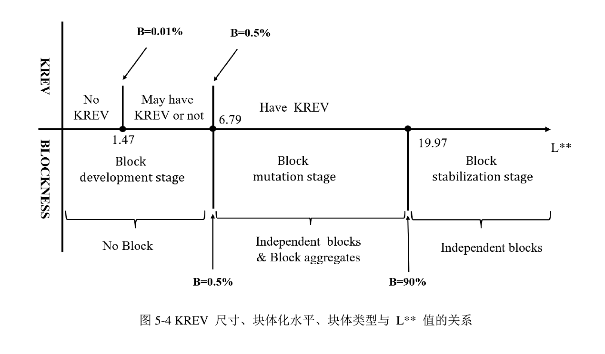
注：论文图 5-4 采用 L**≈19.97 表示块体稳定阶段的图示分界；论文摘要与结论中另给出 L**>20.46 时 B>90% 并逐渐稳定。网页按原论文分别保留这两种表述，不将二者合并为同一阈值。
核心学术模块
以下坐标约定沿用论文：X 轴正向为正北（N），Y 轴正向为正西，φ 为裂隙倾向，θ 为倾角。该约定与部分地质软件的方位角定义不同，使用计算器前应先统一坐标约定。
对倾向 φ、倾角 θ 的裂隙面，方向向量与单位法向量可写为：
向量法把“面”的空间姿态转化为可直接进行点积、叉积运算的数值对象。
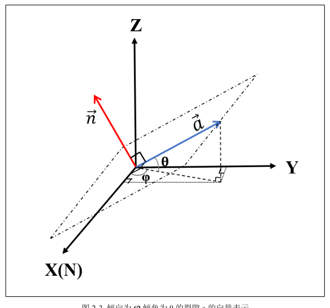
设两裂隙面的法向量分别为 n₁、n₂，则平面夹角由法向量夹角确定：
若计算值大于 90°，取其补角，使 α 表示两裂隙面的锐夹角。该角度直接进入最短切割长度与连通性分析。
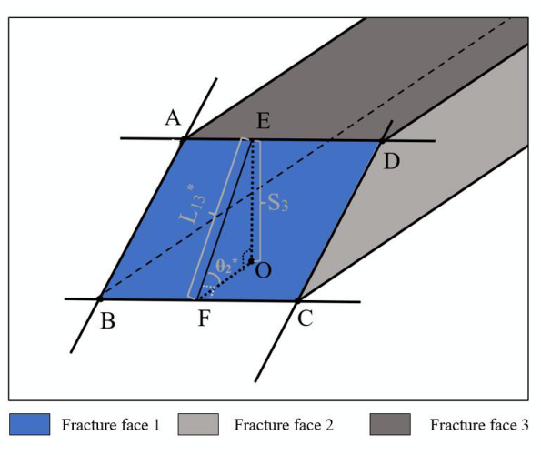
两裂隙面的交线方向 m 可由法向量叉积得到：m = n₁ × n₂。若第三裂隙面法向量为 n₃，则交线与第三平面的锐夹角 β 可写为：
这与论文中“90° − 交线与法向量夹角”的几何表达等价。结合裂隙间距 S，可得到交线被第三裂隙切割后的特征长度 L = S / sinβ。
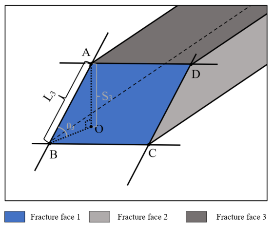
交互计算器
角度单位为度。φ 按本页坐标约定输入；θ 建议取 0–90°。
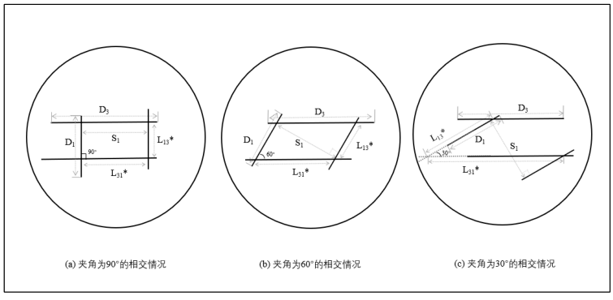
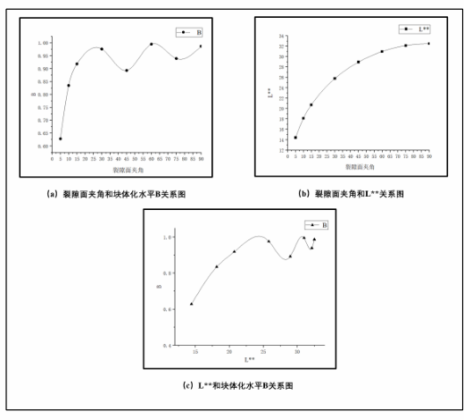
代表性论文
Journal of Hydrology 661, 133700.
作者信息已由期刊 Corrigendum 更正；更正记录列出 Pengcheng Ma、Maxime Levy Kongandembou、Qingchun Yu。
Qiuyu Wang, Pengcheng Ma, Qingchun Yu · Rock Mechanics and Rock Engineering.
通过 3D DFN、方向等效渗透系数与渗透椭球拟合，检验块体化水平作为 KREV 存在性指标的有效性。
文学作品
在专业研究与野外实践之外，以诗歌记录地质与水文地质工作中的观察、时间感与职业体验。
参与地热地质测量、物探与化探成果综合分析、钻探及抽水试验等工作；使用 SPSS 开展氡气数据统计分析，并结合 MapGIS 叠加异常信息，参与地热异常靶区与钻孔选址分析，同时参与勘查设计、预可行性研究报告和钻孔布置方案编制。
组织现场水文地质调查、钻探编录和抽水试验，统筹资料整理与专项报告编写，为建设用地环境影响评价提供地质—水文地质依据。
参与地质—水文地质调查、钻探编录、抽水试验、质量与安全台账管理及成果报告编写。所参与的“湖北省罗田县苍葭冲地区饮用天然矿泉水资源勘查”成果资料先后获得全队地质项目资料质量展评二等奖和湖北省地质局第二届项目成果资料质量展评优秀奖。
研究方向为地下水循环，硕士导师为于青春教授。硕士论文围绕非正交裂隙网络中产状、延展性与间距对块体化水平和 KREV 存在性的影响展开；在此期间完成《2023年水文地质与水资源调查监测》高级培训班学习（40 学时）并取得结业证书。
参与“基于 BP 神经网络模型的城市尾水水质变化趋势预测”学生科技项目，项目成果等级评定为“良好”，本人列完成者第三位。
完成地下水科学与工程本科阶段学习，系统学习地下水动力学、水文地质基础、地下水数值模拟及工程地质等课程与方法，为后续裂隙岩体渗流和水资源调查工作奠定专业基础。
荣誉与证书
以下展示本网站使用的全部荣誉/证书图片。证书仅做边缘裁剪与透视校正以减少拍摄背景，不改变证书正文内容。点击图片可查看大图。
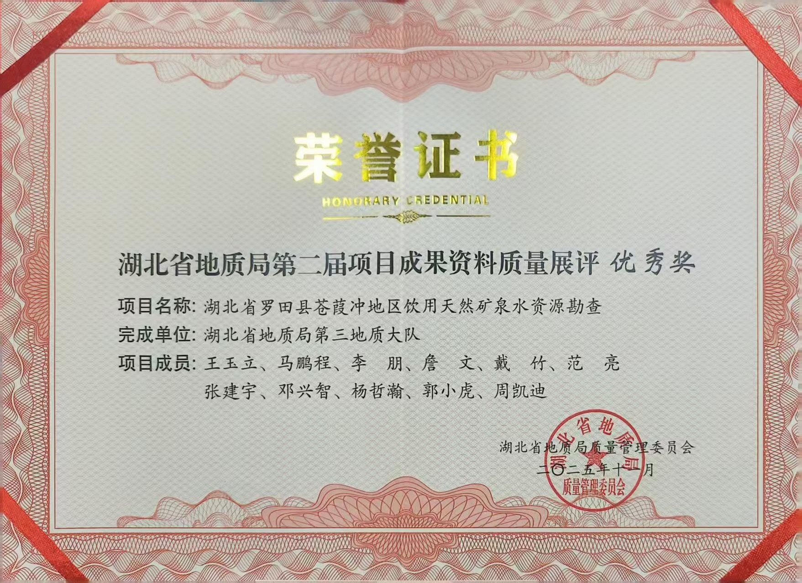
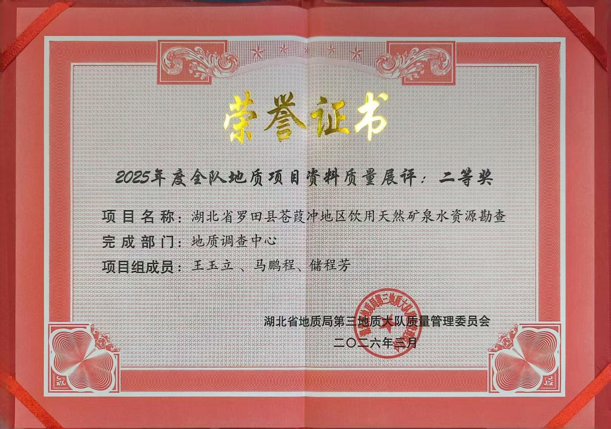
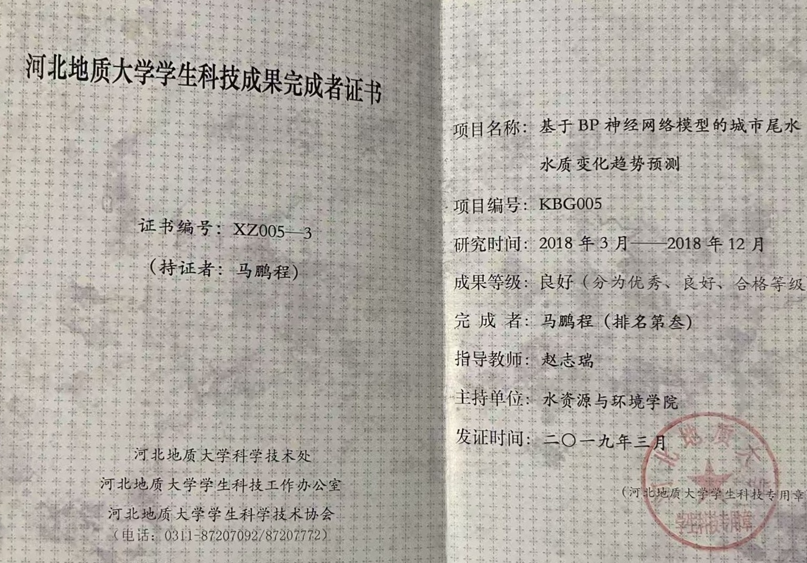
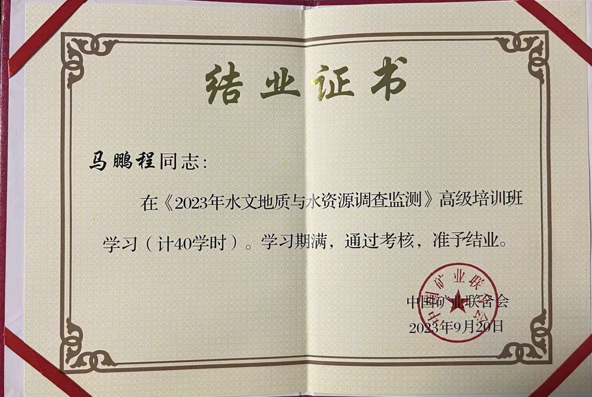
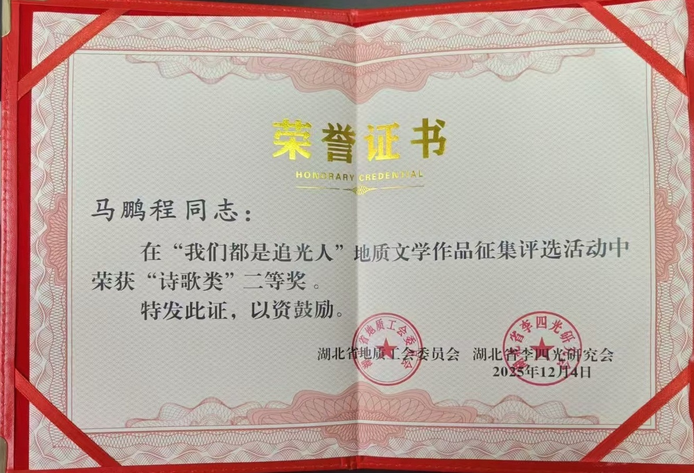